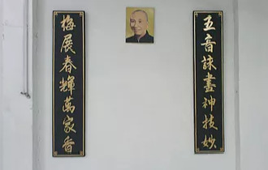

Sobre a Diferença entre Linhas de Wing Chun
Por Thomas Pinheiro
Outro dia lendo na internet comentários sobre Wing Chun, fiquei pensando se deveria escrever algo sobre ter treinado sob a direção de um mestre de Wing Chun e por outros, mesmo em teoria, advindos da mesma escola do mestre Yip Man. Francamente a técnica deveria ser a mesma, e quando falo a mesma, é a mesma. Porém quando se treina, é muito difícil saber em que ponto você chega e o que ainda pode progredir no aprendizado.
Tive quatro professores de Wing Chun, sendo que o ultimo é o mestre Thomas Lo, com quem sempre recebo correções ou algum detalhe a mais. O qual me sinto honrado por ser seu discípulo. O primeiro realmente só pôde ensinar uma coisa, força bruta e total falta de entendimento da técnica.
Ser violento não ensina a ninguém, tecnicamente era muito ruim, era apenas força bruta, não tinha aproveitamento do corpo como um todo, nem em partes. Não basta você copiar movimentos, tem que realmente saber o que significam e como treina-los. A violência gratuita em treino, ou treino baseado em resistência física, não te garantem aprendizado técnico. Não dá para um professor ensinar algo que ele não tenha vivido realmente.
Com meu segundo professor, achei que por ser chinês era fonte segura, novamente houve um problema, apenas formas e pouco entendimento sobre elas, sobre as técnicas. Não passou de seis meses. Mas ainda assim, alguma coisa começou a aparecer, pois pior do que estava anteriormente era dificil.
Ao aprender com o terceiro professor de Wing Chun, aprendi todas as formas, inúmeros exercícios com parceiro, de braço, perna, ombro, muitas aplicações. Achei que estava me realizando com tudo o que estava recebendo, mas ao experienciar as técnicas com meu quarto professor, mestre Thomas Lo, mesmo percebendo semelhança na técnica, percebi os detalhes na execução que faltavam, algo que eu não conseguia fazer.
Poderia ter me satisfeito com o que tinha, mas não foi o que ocorreu, achei que realmente faltavam explanações técnicas, sobre maneira de treinar, como aumentar a potência de ataque, e a sensibilidade. Confesso ter sido uma fase difícil, pois você reaprender necessita humildade, perseverança, empenho, e repensar uma visão de algo praticado; assim como assimilar correções depende muito de sua mente estar aberta, e também de se testar.
Formas eu aprendi em todo meu treino só do Chum Kiu umas três variações, duas de Mook Jong, e assim vai. Então quando se fala em comparar, a gente pode comparar quando tem alguma noção, quando se permanece dedicado àquela linha, quando estuda-se o que está aprendendo.
Comparar sequência de forma não significa nada, e sim como são feitos os movimentos, postura de corpo, etc.... Já li em fórum do exterior comentários sobre ter executado uma forma de facão ou de bastão, fiquei contente com os elogios, mas... É bem engraçada a situação, as pessoas veem sua forma e aí comentam bem, mas não sabem dizer no que ela difere realmente; quando ela se parece com alguma outra falam: "Ah, é a forma do mestre X ou Y."
O que aprendi e venho desenvolvendo a anos tem sido baseado no meu aprendizado com mestre Thomas Lo, e posso encaixa-lo em qualquer outra sequência que até já tenha aprendido. Porém a execução das técnicas seguem as correções que tive com mestre Lo. Além de aprender, faz parte do treino testa-las, verificando seu ponto forte e alguma brecha que possa dar também, ou ajuste a ser considerado por diferença física do praticante, com isso você se policia a melhorar tecnicamente.
As técnicas vindas do Grande Mestre Yip Man deveriam ser as mesmas em qualquer escola de seus alunos, afinal os conceitos devem ser sempre os mesmos, e devem aparecer na aplicação também.
As combinações variam, até os movimentos podem variar, mas o sentido, a maneira de produzir no caso um bloqueio ou ataque, devem ter sempre a mesma formulação. As sequências podem ser modificadas a gosto, mas elas podem revelar com qual intuito você treina. Um tan sau sempre será um tan sau, não importa se é alto, se é baixo , se é por dentro ou por fora, com nível maior de treino você consegue interceptar um soco com o tan sau sem ter necessidade de girar o corpo.
A partir do aprendizado de Chum Kiu fica muito clara a diferença entre o treino qualificado e desqualificado, um Siu Lim Tau bem treinado lhe garante formatação das técnicas, postura de pernas e braços, mas não lhe dá o potencial extra para os ataques ou para absorção. Então se você só copia movimentos e não tem a explicação de forma mais abrangente e direcionada, você não consegue, mesmo em anos de treino, incutir nas suas reações as habilidades que deveria ter ao praticar determinado nível dentro do Wing Chun.
Se você entrar no youtube, por exemplo, você consegue assistir a inúmeras variações da mesma forma; verá então a falta de coisas que possuem sentido ao treinar, como a sequência, a velocidade , o ritmo, a base, chegando à própria técnica. Linha diferente... acredito atualmente apenas se referir a uma escola de um mestre diferente e que modificou o estilo. Por que então tantas linhas de Wing Chun?
A resposta fica fácil, numa arte em que se insinuam tantos mestres, muitas modificações haverão de haver pela baixa qualidade que se apresenta em boa parte destes; porque na transmissão além de um mestre, se faz de suma importância o aluno, é necessária a conexão entre ambas as partes, discípulo e mestre.